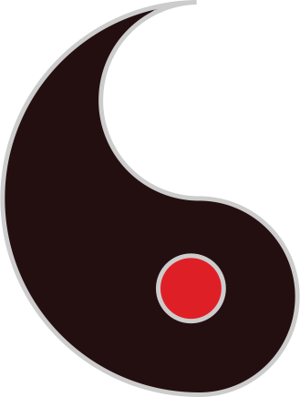
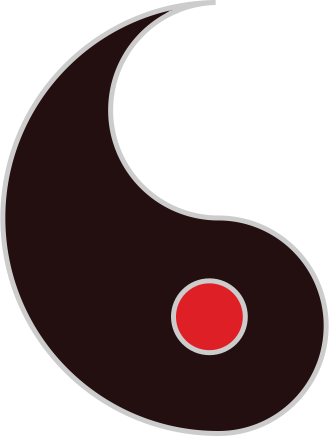

Tangible 
Tangible 
At this stage of being I haven’t correct dreams that may understand what I want to have. But of course I want to make some great companies that may have a good environment inside. Every work needs to be correctly created by psycho of people. At this moment I already have a great upgrades of business like AI in food and logistic of food to workers. I have a different concept that will use in big company if I will have it. I wonder to imagine something like it because it’s really may be useful and important if you have big business. It may safe time, show workers your technique upgrade than other.
Every worker will be in part of team that needs to create your own space. Only when people in team create their own environment you may understand their thinking in real moment. If they do something you may correct in not on level of real tangible. It’s copy to intangible world of mind that workers have before and after changing in room that they create by themselves.
My dream to create no less than city from one company. I wish that it’s may be crazy but I can’t have environment in 1 foundation it’s may be biggest foundation-city but not less than it. All of rooms where work people can’t name like other people it’s stupid no offense to Steve.
People try to copy place and name where they work. Of course he thinks that if they work by this name they try to copy it. But how you can control it. How you may understand how workers explain meaning of this human. I think that this method to name rooms really cool but you need to make it simpler and more fundamental.
I don’t think about this stage at the moment but I have great ideas that I dream to realize.